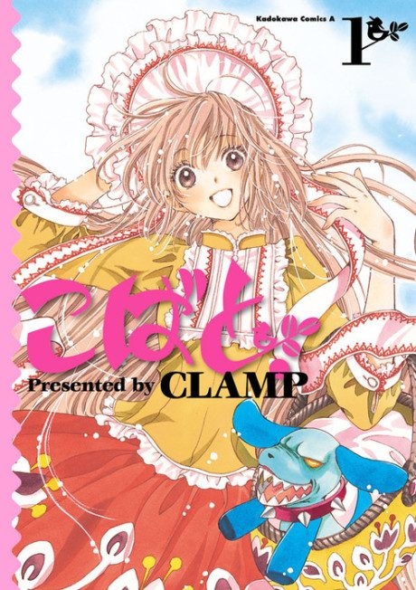

Anime
Anime
Manga2009 · Comedy, Drama, Fantasy
Kobato
こばと。
AniList7.6
Animeter—
Episodes24 ep
MangaUnclear
Is it worth pushing through?
Built from what visitors report across all 24 episodes.
Loading reports…Checking what other people said about this one.
Sign in with your email at the top of the page to add your report.